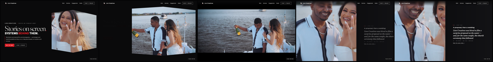
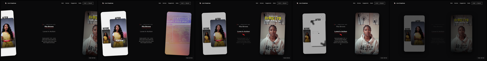
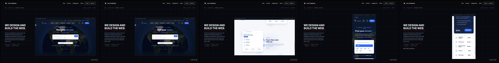
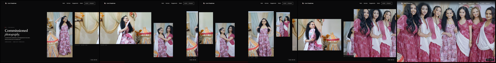
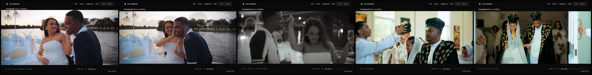
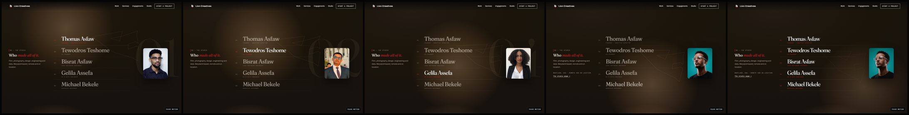
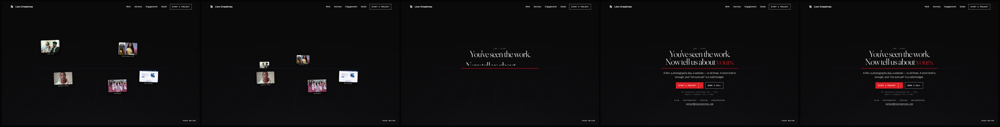
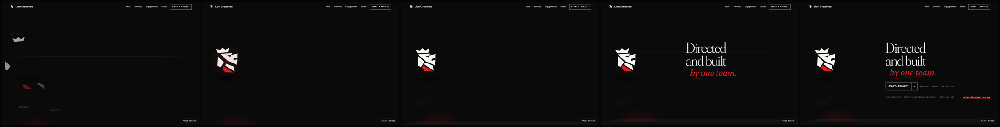

Every item from the founder’s V11 homepage motion pass, with the §45 still-frame gate: five deliberate states per scene at 1440×900 (0 / 25 / 50 / 75 / 100% of each runway). Every frame is a capture of the build under review.
The V10 aperture shifted its polygon with the cursor: a pointermove listener rewrote the clip-path from the pointer position, fighting the scroll engine’s own writes. The listener is removed, not damped — the aperture is spatially stable and the film provides the motion. An automated test now moves the pointer across the hero and fails if the frame changes at all.

0 · 25 · 50 · 75 · 100% of the runway · 1440×900
2Hero — continuous playback
One <video> element carries the whole choreography — aperture, full-screen cinema, split — with no poster swap, no element recreation and no reset. It now preloads fully, declares autoplay, retries politely if the browser defers, and is only paused when the sequence is a full viewport away. A test rides all five states and fails if the film pauses or its clock ever runs backwards.
0 · 25 · 50 · 75 · 100% of the runway · 1440×900
3Full-screen → split: the film MOVES, black never covers it
V10 clipped the film in place, so void ate the picture from the right — the founder’s §9. Now the media counter-translates LEFT with the closing clip while the project story enters as a real dark surface whose leading edge rides the film’s trailing edge — one seam, verified by test to under 1.5vw. The couple stays centred in the shrinking frame and the film keeps playing throughout.
0 · 25 · 50 · 75 · 100% of the runway · 1440×900
4“Stories on screen.” is one idea
The only permitted break is after “Stories” (a nowrap span guards it) and the two lines now sit at line-height .81, so on any viewport where the display line wraps it reads as one composed thought — not two unrelated headlines. On phones the whole hero recomposes as a poster: aperture upper right, words lower left, so no line of type ever crosses the couple’s faces.
0 · 25 · 50 · 75 · 100% of the runway · 1440×900
5Commissioned reels — untouched, and one defect fixed
The Vista-derived motion is byte-identical to the approved build: throw, knee, tilt, focus handoff, rounded corners. One defect the still-frame gate caught was fixed: at the midpoint the two project descriptions used to crossfade ON TOP of each other into unreadable soup — they are now sequenced, one fully out before the other enters.

0 · 25 · 50 · 75 · 100% of the runway · 1440×900
6Dunamis — a living product, honestly
The hero band of the capture is now an interactive portfolio mirror of the client’s own public implementation: their globe really is a flat Earth texture panning inside a circular mask (70s per revolution — measured from their CSS), and their headline types domain. name. brand. future. at their measured cadence (70ms/char, 1600ms hold, 35ms/char delete). Both are rebuilt as real DOM riding the capture’s exact transforms, so the hero is genuinely alive at every stop — desktop and phone — and the chip now reads “Live mirror · capture”. No iframe: the site still sends X-Frame-Options: SAMEORIGIN, and their security was not touched.

0 · 25 · 50 · 75 · 100% of the runway · 1440×900
7Photography — a camera push, and no heading on the payoff
The group frame no longer “gets big” — the full-screen plate is FLIP-matched to the in-track frame’s live rectangle and expands continuously out of it while the camera leans in and the rest of the track recedes and dims. The repeated “04 — Photography” heading is gone from the payoff: the photograph is the statement. Uniform scale plus vertical clip only — the aspect is never stretched.

0 · 25 · 50 · 75 · 100% of the runway · 1440×900
8The wedding sequence — a different grammar entirely
The cream strip is gone. THE EDIT: six full-bleed cuts of one couple’s real day in true order — the ask, the ring, the night, the ceremony, the crowning, the exit — on void between letterbox bars, with diagonal blade wipes between frames and a live slow settle inside each. Two cuts are the actual films, playing. All type lives on the bars: title top, slate and progress bottom. Frame-matched 2880px derivatives were cut from the 4K masters so every full-bleed still passes the resolution gate.

0 · 25 · 50 · 75 · 100% of the runway · 1440×900
9Studio — an environment, not a void
The credit-roll concept stays; the room around it is new: a giant background index numeral crossfades with whoever the light dwells on, a warm pool slides along the floor beneath the active name, the lit name gains real weight through the variable font, and the active print leans forward. The travelling light now hands directly to the group assembly with no dead gap.

0 · 25 · 50 · 75 · 100% of the runway · 1440×900
10Section 06 — The Convergence
Rebuilt from scratch, third time. No card, no cream, no white field: the five projects the visitor just saw fly out of depth, align along one axis and are absorbed into the red thread — the work literally resolves into the line under “Now tell us about yours.” The room has a horizon and a perspective floor; the CTA row, categories and address arrive on the same axis. A test asserts no large light surface can ever return to this scene.

0 · 25 · 50 · 75 · 100% of the runway · 1440×900
11Finale — a stage worthy of the mark
The red Gaussian blob is deleted; the cream void is deleted (tests assert both). The five planes fly home along their centroid rays over a dark dimensional stage — horizon, receding floor grid, a small shaped pool of red light from the red plane itself, a faint reflection under the baseline (blur lives on the reflection only, never the mark) — each plane carrying the name of the thread it stood for. Lock at exact canonical geometry, hold, then the closing line, the gate and the imprint arrive in strict sequence.

0 · 25 · 50 · 75 · 100% of the runway · 1440×900
+Notes a reviewer should have
The Ria Brows reel contains a white “AFTER” card with an on-screen cursor at one moment mid-film — that is the client’s published edit (a social-style transition inside the reel), not a rendering failure.
The proposal film opens with an internal cross-dissolve; a frozen frame during it reads as a double exposure. That is the film’s own cut, left untouched.
The reel pair dims at the very end of its scene — that is the approved V9 bridge handing the frame to the technology scene, sampled mid-handoff.
The hero and cinema loop videos are 1600px sources shown full-width; at 2× density that is a 1.8× video upscale. Motion hides what stills cannot, and the founder accepted the same at the V10 gate — but 2880px re-encodes from the 4K masters are a straightforward follow-up if wanted.
81/81 automated checks pass across Chromium, Firefox and WebKit, including new gates for hover stability, playback continuity, the seam, the payoff’s silence, the convergence’s darkness, the finale’s stage and the living Dunamis hero. One Firefox check (type-over-media) flakes only under heavy parallel machine load and passes every isolated run.